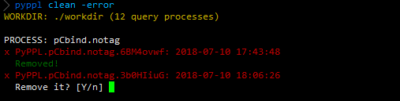
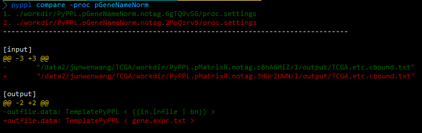

Command line tool
When you are debuggin a processes, specially when you are modify input, output and script, the suffix a process will change. Then there will be several <workdir> created in <ppldir>. The command line tool helps to maintain and clean up the <workdir>s
> bin/pyppl
DESCRIPTION:
PyPPL command line tool
COMMANDS:
list - list work directories under <wdir>
clean - remove some work directories
compare - compare two processes from different directories
help <COMMAND> - Print help information for the command
List processes

pyppl list command will list the processes in./workdir. It will group the processes with same id and tag, and compare their time start to run. The latest one will show at the first place, follows the second latest, ... If a proc.settings cannot be found in the process directory, it will be shown in red.
Clean processes

pyppl clean command will ask whether you want to remove the process directory for the older processes with the same id and tag.
You can remove all those older process directories without confirmation by pyppl clean -force

Caution
Be careful when you are using pyppl clean -force, which will remove all workdirs in <wdir>
Compare the settings of two pipeines

pyppl compare uses python's difflib to compare the proc.settings files in the directories of two processes. it can take a process group name (i.e. -pro pSort.notag, in this case, actually, the tag can be omitted if it is notag, so you can use -pro pSort) to compare the top 2 latest processes or two process names with suffices (i.e. -proc1 pSort.notag.4HIhyVbp -proc2 pSort.notag.7hNBe2uT.